Helping Santa
The Christmas event has arrived on NovaRO! Get your backpack (be it heroic or not) and let's head out to help Santa!
There is no level requirement to participate in this event.
Goblin Gift Grab - Stolen Supplies
Part 1: Christmas Goblins
- Talk to Santa Claus.
- Kill 25 Christmas Goblins. They spawn in any field or dungeon.25
- Stormy Knight's slaves with the same name don't count.
- Return to Santa Claus. You obtain 1 Xmas Gift and 1
 X-Mas Goblin Egg.
X-Mas Goblin Egg.


Part 2: Stolen Supplies

- Talk to Santa Claus. He'll ask you to recover his supplies.
- Go to Payon Dungeon, Orc Dungeon 2 and to the Goblin Village (Orc Dungeon > Go outside > Walk South > gef_fild11).
- Find and kill Stolen X-Mas Supply Boxes. There are three type of Boxes.
- Goblin Village: Boxes drop Wrapping Lace. You'll need 6.
- Payon Dungeon Level 1: Boxes drop
 Wrapping Paper. You'll need 2.
Wrapping Paper. You'll need 2. - Orc Dungeon Floor 2: Boxes drop Toy Shield. You'll need 1.
Part 3: The Goblin Leader

- Talk to Santa Claus. He'll ask you to recover Yulia's Hat.
- Go to Lutie and find the Goblin Raider's Leader (he respawns instantly).
- Bring back the hat to Santa Claus. You'll obtain the following items:
| Image | Name | Type | Description |
|---|---|---|---|
 Christmas Musicbox Christmas Musicbox
|
Accessory | Enables the usage of  Christmas Carol. Christmas Carol.
| |
 Christmas Snow Rabbit Egg Christmas Snow Rabbit Egg
|
Pet Egg | Eats 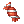 Candy.
During Christmas, increases EXP by 2% and MATK by 2%. | |
 Polar Bear Cap Polar Bear Cap
|
Upper Headgear | MDEF +3, AGI +1, DEX +1.
During Christmas, increases HP recovery speed by 5% and SP recovery speed by 3%. Adds a chance to drop |
Retrieving Gifts
Walkthrough
You must complete the Stolen Supplies quest before proceeding.
- Go to Lutie, Lutie Field 1 or to Toy Factory Floor 1.
- Find the following monsters in the following places:
- Note: Drop rate is not 100%
- Collect 20 of each and exchange them with Santa Claus for an Xmas Package.
- This box contains one of the following Christmas themed headgears:
Santa's Supply Shipment
You can start by speaking with Santa in Prontera and selecting Santa's Supply Shipment. You'll also get a Santa Suit, which you must equip before proceeding.
There are a total of 5 houses, that must be completed in order. Completing a house gives you access to the next one.
Once you complete all houses, you can proceed to Hard Mode. You'll also be able to reset your progress in order to choose a new reward.
Houses
Wheeler Household (House 1)
- The first house can be found at .
- Be careful with your HP, once it reaches 0 you will be warped out. You start the house in the cellar and there's not much of interest here. You'll want to avoid the poisonous plants since they will drain some of your HP if you step on them while they're active. Look for the purple effect to know when to avoid them. Walk to the right a little then go up to find the stairs to the main corridor.
- For the next parts, you'll want to be extra careful when you walk around. Do not walk on any objects, that includes bread, books, paper or really anything else. You will lose some HP if you do (don't hurt your toes!!).
- You can find a minimap by going from the main corridor > top portal > top portal again > walk to the bottom right of the room. It will trigger a short cutscene and the minimap will show up at the top right of your screen.
- If you went to get the minimap, you'll find the final door you need to get to (with some bubble effects). Speak with it at least once to trigger the next step of the quest. It will tell you that you need to find the code by checking lockboxes in the drawers around the house.
- The locations of the drawers are as follow (the correct one is random):
- The first one is found in the main corridor, on the left side.
- The second one is found in the room on the far left of the main corridor
- The third one is found in the room at the bottom of the main corridor (not the cellar, walk to the top left part of the main corridor then use the portals on the bottom). The Lockbox is found on the leftmost side of the room.
- The fourth one is found at the bottom right room from the main corridor.
- The fifth one is found at the top right room from the main corridor. The Lockbox is at the bottom right part of the room.
- Once you have the key, go back to the final room (main corridor > top most portal > top portal again > go to the right).
- You'll be sent in a new room, just keep walking to the right and enter the portal.
- Keep going until you reach the Tree (be careful, there are many obstacles in that room).
- Deposit the present and you'll have completed the first house!

Harlington Manor (House 2)
- Speak with Santa again in Prontera and tell him you've delivered the gifts. He'll have another job for you at another house (found at ).
- This house has 3 stockings that you must fill with presents. You have to hurry up in this one however! As always, you have to be careful not to hit objects in the house. You have 5 minutes to find all three stockings and the timer will show up in your screen. The timer only starts after finding the first stocking.
- You start this one in the kitchen, this room doesn't have much of interest. Just walk down to the next area.
- The next room doesn't have anything, just keep walking down.
- You'll end up in a garden with 3 different portals.
- The first stocking can be found at Garden > Right portal > Top portal > Top portal > Right portal > Top right of the room. After you've delivered the gifts in the stocking, go back to the previous room and you'll notice a door warping you back to the kitchen. Just walk up a little and you'll be sent back to the kitchen. Walk to the portal south and you'll be in the Garden.
- The second stocking is at Garden > Bottom portal > Left portal > You'll be in the Arena, watch out for the obstacles and time your movements correctly > You have to go at the top left portal > Top portal > Bottom right of the room. If you walk on the carpet, you will be warped back to the armoury room. From there, just walk back up and you'll be back at the Garden.
- The third stocking is at the Garden > Left portal > Right portal > Top portal > Top left portal > Bottom right of the room. You can use the kitchen door again from there, just go back to the previous room and go along the top wall to be warped back. Then walk south and you'll be in the Garden once more.
- There is no order for the stockings, once you've done all three of them you'll be sent out of the map and done with house 2!

Birch Residency (House 3)
The third house can be found at .
This house may take multiple tries, due to the highly randomized walking pattern of the dogs.
Mr. Robinson's Place (House 4)
The fourth house can be found at .
Maguire Cabin (House 5)
The fifth house can be found at .
This house may take multiple tries, due to the highly randomized walking pattern of the yetis.
Rewards
Once you finish all the houses, you will receive an Adorned Christmas Tree costume, together with another costume of your choosing, out of the following list:
- 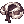 Christmas Kitty Coat
- Costume Snowman Hat
- Red Christmas Kitty Coat
- Brown Gingham Shawl
- Holiday Gingham Shawl
 White Ribbon Scarf
White Ribbon Scarf Green Ribbon Scarf
Green Ribbon Scarf
You'll also unlock Hard Mode.
Hard Mode
In hard mode, you'll have a set maximum HP of 20% and cannot be healed further by any ways. Every other gameplay aspect remains the same.
To enter Hard Mode, you'll need to speak with the designated Surly Elf of each house. This time, you can complete them in any order.
Each Surly Elf will tell you if you already cleared that specific house, changing the option from "Hard mode" to "Hard mode (clear)".
Once you complete all houses in Hard Mode, talk to Santa again for a new reward. You'll be able to choose one of the following costumes:

After receiving one of the rewards above, you can Reset your progress, which will allow you to re-do all houses and select new rewards after each completion.
Frenzy Games
The Frenzy Games can be found by killing Mysterious Gift on any field or dungeon maps. They will stay up after you kill one and let you choose between two games. Anyone can enter these games for up to 30 seconds, after which the Mysterious Gift will instantly respawn. Completing the mini-games give you 1 or 2 Secret Santa Gift depending of your performance. These gifts contain various rewards and more information can be found here.
Clean Up Craze
The floor needs some cleaning up! You will get warped randomly in two different rooms and you have to clear as many cells as possible by removing the Land Protector. Be careful not to walk on the objects or you will make a bigger mess (new LP cells will pop up).
- A score of 350 is required to get 1 Secret Santa Gift.
- A score of 480 is required to get 2 Secret Santa Gifts.
Present Panic
This mini-game plays exactly like Whack-a-mole. Your goal here is to hit as many of the Gift Boxes as possible within the allocated time while avoiding hitting any of the elves. Hitting a Good luck!
- A score of 40 is required to get 1 Secret Santa Gift.
- A score of 55 is required to get 2 Secret Santa Gifts.
Sort-A-Gift
This game is a bit tricky and will definitely hurt your brain at first! You have two conveyor belts which both spawn Gift Boxes with different colors. There are four "buttons" on the ground that you have to step on to activate. The goal is to match the Gift Box color with the button's color. So let's say a blue Gift Box spawns at the top right, then you have to step on the top right blue pad. You only lose points if you step on a button and the color of the Gift Box is wrong (it will display a "Failed" on the box as well). To get better scores, you'll want to step on 2~3 pads after the belts move and that's when it gets really confusing.
As a general tip, you want to be on the pad before the next Gift Box arrives, but after they start moving. So for example, if you have two matching boxes coming down next, you'll want to wait for the belt to move, then immediately walk on the pad after they start moving, then walk to the other pad (and then leave the pad to be sure you don't pickup a wrong color afterwards).
- A score of 12 is required to get 1 Secret Santa Gift.
- A score of 22 is required to get 2 Secret Santa Gifts.
Wordmill
In this one, you have to type the sentences given to you, in public chat. The faster you are, the more points you get.
- A score of 40 is required to get 1 Secret Santa Gift.
- A score of 100 is required to get 2 Secret Santa Gifts.
Bomb Maze Blitz
In this one, you simply have to solve the maze by avoiding the bombs. The end of the maze is always at the top row, near the gold. The exit is a shiny green effect shown in the image on the right. You have one minute to finish it and you can walk on the bombs up to 3 times before it kicks you out.
- Completing the maze will reward you with 1 Secret Santa Gift.
- There doesn't seem to be a way to get 2 Secret Santa Gifts from this game.
Snowball Fight
Snowball Fight is an automated, pvp arena event where two teams clash against each other in a deathmatch.
- A portal will open in Prontera every time the event runs. The current timeslots are 6:30, 11:30, 17:30 and 23:30.
- Each one of these timeslots will run three consecutive rounds, with new teams being formed after each round.
- Once joining, if you don't possess one yet, you'll obtain a Snowball.
- This usable item lets you aim and shoot a snowball at the enemy team, dealing a set amount of damage (1/3 max HP of the target) in a 3x3 area.
- Every time you knock out a player, you'll receive 2 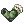 Jolly Socks, directly in your inventory.
- Additionally, any player will drop
 Naughty Coals to the ground when they die.
Naughty Coals to the ground when they die.
- Additionally, any player will drop
- The team with more kills at the end wins. Each member of the winning team receives 8 Secret Santa Gifts while members of the losing team will get 3.
- Every 35 seconds, Supply Crates will be dropped in the middle, left, and right sides of the Snowball arena. These supply crates contain Jolly Socks, Naughty Coals, and possibly Flak Snowballs, Sleep Snowballs or even Soaked Snowballs.
- Flak Snowballs deal damage in multiple small areas which can overlap.
- Sleep Snowballs makes the affected target sleep and take increased damage on the next hit they take.
- Soaked Snowballs deal enough damage to one-shot an enemy.
Naughty Coals can be used to purchase a plethora of enhancements from Antonio, at the staging arena:
| Image | Name | Effect |
|---|---|---|
 Antonios Snow Shoes Antonios Snow Shoes
|
Increases movement speed inside the Snowball Arena. (Expires after each round) | |
| Antonios Ski Jacket | Reduces damage taken by snowballs in the Snowball Arena. (Expires after each round) | |
| Candy Lacrosse Stick | Increases damage your Snowballs do in the Snowball Arena. (Expires after each round) | |

|
Medicated Snowball | Throwing it at a team member allows you to heal them. |
| Antonios Trap Tool | Place a trap that deals damage, slows and freeze. (One time use) | |

|
Big Snowball | A snow ball that hits harder and in a 5x5 area. (One time use) |
| Toxin Snowball | Deals damage over time and reduces heals received from Medicated Snowball by 50% on the target. (One time use) |
Achievements
| Title | Description |
|---|---|
| Snow much fun! | Participate in 150 rounds of snowball. |
| Abominable Snowball | Knock out 500 players in snowball. |
| BRRfooted | Equip a full set of Snowball gears (boots, weapon and armor). |
| Unwrapped | Open 5 supply crates during snowball. |
| Snow Joke | Win snowball 100 times. |
| Snowbalist | Heal 100 team mates using the Medicated Snowball. |
| Jack Frost | Freeze 100 players using Antonio's Trap. |
Exclusive Quests
These quests are only able to be completed while the event is active.


Shelter Supervisor
The Shelter Supervisor can be found in Prontera while the event is active.
She's able to craft different blankets, each corresponding to one particular pet.
| Available Costumes | |||
|---|---|---|---|
| Pet Name | Item List | Pet Name | Item List |
|
|
|
Husky on Head
|
|
|
Kishu on Head
|
|
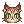 Leopard Cat [M]
|
|
|
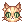 Orange Tabby Cat [M]
|
|
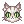 Snow Leopard Cat [M]
|
|
|
|
|
||


Smile, the Milliner
Main article: Smile the Milliner

Secret Santa Gift
Secret Santa Gift boxes are obtained from playing Frenzy Games and also from Snowball Fight.
There are items exclusive to each box, as well as a shared list.


| Shared Item List | ||||
|---|---|---|---|---|
 Buche de Noel x 3 Buche de Noel x 3
|
Cookie Bag x 2 |  Angeling Potion x 3 Angeling Potion x 3
|
 LV10 Agility Scroll x 2 LV10 Agility Scroll x 2
|
 LV10 Blessing Scroll x 2 LV10 Blessing Scroll x 2
|
 LV5 Assumptio Scroll x 2 LV5 Assumptio Scroll x 2
|
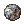 Elunium x 3 |  Oridecon x 3 Oridecon x 3
|
 Yggdrasil Seed Yggdrasil Seed
|
 Yggdrasil Berry Yggdrasil Berry
|
 Elunium Box Elunium Box
|
 Oridecon Box Oridecon Box
|
 Blessing Scroll Box (x10) Blessing Scroll Box (x10)
|
 Increase Agi Scroll Box (x10) Increase Agi Scroll Box (x10)
|
 Big Def Potion x 2 Big Def Potion x 2
|
 Big MDef Potion x 2 Big MDef Potion x 2
|
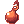 Rejuvenation Potion |  Potion of Energy Potion of Energy
|
 Regenetion Potion x 2 Regenetion Potion x 2
|
 Mega Rejuvenation Potion x 3 Mega Rejuvenation Potion x 3
|
 Mega Potion of Energy x 3 Mega Potion of Energy x 3
|
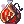 Powerful Jager x 3 |  Witty Gin x 3 Witty Gin x 3
|
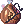 Apathetic Stout x 3 |  Skillful Whisky x 3 Skillful Whisky x 3
|
 Speedy Tequila x 3 Speedy Tequila x 3
|
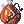 Lucky Rum x 3 |  Gold Coin x 3 or 10 Gold Coin x 3 or 10
|
 Field Manual Field Manual
|
 Kafra Card x 2 Kafra Card x 2
|
 Token of Siegfried x 3 Token of Siegfried x 3
|
 Giant Fly Wing Box Giant Fly Wing Box
|
 Convex Mirror Convex Mirror
|
 Reversal Voucher Reversal Voucher
|
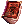 E Converter Compendium |
 Buff Scroll Compendium Buff Scroll Compendium
|
 Old Card Compendium Old Card Compendium
|
 Guyak Pudding x 4 Guyak Pudding x 4
|
 Guyak Pudding (30 min) Guyak Pudding (30 min)
|
 Event Bubblegum Event Bubblegum
|
 HD Bradium x 2 or 12 HD Bradium x 2 or 12
|
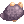 HD Carnium x 2 or 12 |  Enriched Oridecon x 1 or 6 Enriched Oridecon x 1 or 6
|
 Enriched Elunium x 1 or 6 Enriched Elunium x 1 or 6
|
|
Also, by combining the Red and Green Secret Santa Gift, you can obtain a Golden Secret Santa Gift with NPC Frosty the Snowman (Prontera 164, 167).
| '20 Golden Secret Santa Gift | ||
|---|---|---|
| Consumables & etc | Costumes | |
|
|
|